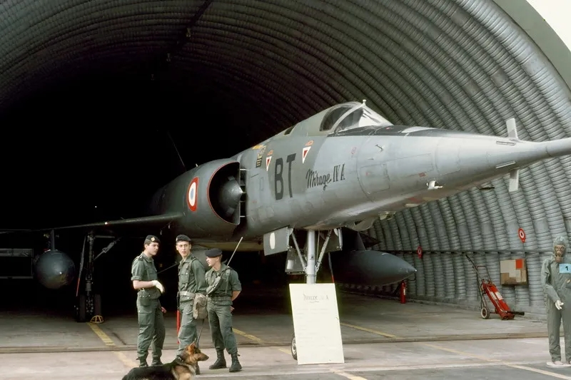

冷战最后十年的空中力量
发布时间：2020-11-21
原作者：李昭辉
搬运地址：空军之翼
冷战期间，难以想象的核毁灭的场景曾几度接近成为现实。到20世纪80年代，北约和华约组织的空中力量在数量上达到了巅峰，比以往任何时候都更加致命，并为采取行动作好了准备。前“狂风”GR.1战斗机飞行员迈克尔•纳皮尔在本文中回顾了东西方冷战对峙的最后十年间双方空中军力的建设情况。
1980年，当西半球的人们在庆祝新年时，恐怕没有人能预见到，未来的十年也将是冷战的最后一段时光：到那时为止，冷战似乎已经成为人们生活中不可或缺的一部分。尽管在20世纪70年代，通过限制战略武器谈判（SALT）、共同均衡裁军谈判（MBFR，也称“中欧裁军谈判”）以及欧洲安全与合作会议（CSCE），为实现东西方和解采取了一些措施，但当苏联于1979年12月入侵阿富汗后，和平方面的进展就停止了，抵制1980年召开的莫斯科夏季奥运会只是国际关系破裂的征兆之一。
超级大国的防区外打击力量
虽然发生了动荡，但对于美国和苏联的武装部队，以及他们在北约和华约组织中的盟友而言，20世纪80年代初还是“一切照旧”的情况：战略打击力量和超级大国的防空力量继续围绕着北极地区进行部署，而在欧洲，世界上装备最精良的空军沿着东西德边界一线的“铁幕”相互对峙。在冷战的前三十年间，随着空气动力学、航空电子、武器技术和电子战的发展，所有北约和华约国家的空军都经历了持续的升级和改进，在冷战的第四个十年，也是最后一个十年亦是如此。
北约和华约的战略打击力量包括洲际弹道导弹和潜射弹道导弹，以及具有核打击能力的远程飞机。美国空军麾下战略空军司令部（SAC）一线部队的主力装备是大约270架由波音公司研制的B-52G/H“同温层堡垒”轰炸机。尽管是20世纪50年代的产品，但在航程和武器携带能力方面，尚没有其他飞机能够与B-52轰炸机相提并论。武器系统和自卫设备的不断升级使B-52轰炸机具有了不可替代性。在20世纪80年代，B-52轰炸机得到了进一步的升级，以挂载波音公司研制的AGM-86B空射巡航导弹（ALCM），这是一种具有核打击能力的武器，使用了地形轮廓匹配制导（TERCOM）系统，射程约1500英里（约2400千米）。在冷战最后十年的后半段，采用常规战斗部的AGM-86C空射巡航导弹也被添加到了B-52的武器库中。
与美国战略空军司令部的兵力相对应，苏联空军麾下的远程航空兵几乎是其的“翻版”。苏联空军远程航空兵的主力装备是图波列夫设计局在20世纪50年代研制的图-95轰炸机（北约报告中给其取的绰号为“熊”）。像B-52一样，图-95轰炸机也得到了升级，可以挂载巡航导弹，当时该机装备的是射程为2500英里（约4000千米）的Kh-55空射巡航导弹，北约方面给其取的绰号是AS-15“撑杆”（Kent），由图-95MS“熊-H”轰炸机发射。在20世纪80年代后期，苏联空军也拥有了超音速战略轰炸机，即图波列夫设计局研制的图-160“白天鹅”轰炸机 （北约报告中给其取的绰号为“海盗旗”）。图-160轰炸机是世界上最大的超音速轰炸机，于1987年在乌克兰加盟共和国的普里卢基空军基地投入使用，当时装备该机型的是驻扎在该基地的近卫重型轰炸航空兵第184团（184 GvTBAP）。不过，由于受到技术问题的困扰，在冷战结束前，苏联方面只制造了大约20架图-160飞机。
除了图-95和图-160战略轰炸机之外，苏联空军远程航空兵还装备有图波列夫设计局研制的图-22M“逆火”中程轰炸机。在苏联空军远程航空兵中服役的大多数图-22M轰炸机团都部署在苏联西部地区，例如位于莫斯科东南部梁赞地区的近卫重型轰炸航空兵第52团，以及部署在爱沙尼亚、白俄罗斯和乌克兰等加盟共和国境内的其他近卫重型轰炸航空兵团。从这些地区出发，他们可以攻击西欧境内的目标。除此之外，从1982年起，驻扎在波兰、加里宁格勒和拉脱维亚加盟共和国境内的苏联空军第4军，以及部署在乌克兰加盟共和国境内的苏联空军第24军装备了苏霍伊设计局研制的苏-24“击剑手”全天候远程战术轰炸机。也就是说，苏联空军部署了5个图-22M轰炸机团和12个苏-24战斗轰炸机团，他们的打击范围可全部覆盖北约的核心地区。
北美防空力量
尽管美国和苏联的战略轰炸机部队在兵力结构上类似，但这两个超级大国在防空上却采取了不同的做法。美国与加拿大联合使用的“北美防空司令部”（NORAD）始终以一条连绵不断的预警雷达链为基础：20世纪50年代的“松树”防线在20世纪60年代被“远程预警”（DEW）雷达防线所取代，后者起自阿拉斯加，横跨加拿大北部，直到格陵兰。在20世纪80年代后期，该系统进一步升级为“北方预警系统”（NWS）。由于雷达沿其边界地区连续覆盖，因此保卫北美防空司令部所辖空域所需的截击机数量相对较少。
1980年，部署在阿拉斯加州埃尔门多夫空军基地的美国空军第21战术战斗机联队用麦克唐纳•道格拉斯公司研制的F-15A“鹰”式战斗机取代了之前装备的、同样是由麦道公司研制的F-4E“鬼怪Ⅱ”战斗机。1982年11月24日，部署在阿拉斯加地区的F-15战斗机首次对苏联飞机进行了拦截。当天，两架前沿部署到金萨蒙简易机场上的F-15A战斗机紧急起飞，拦截了一架图-95轰炸机。从阿拉斯加继续往东，加拿大武装部队在西部的科莫克斯、中部的查塔姆和东部的巴格特维尔部署了三个战斗机中队，装备有麦克唐纳公司研制的CF-101“巫毒”战斗机。在20世纪80年代初期，这些飞机被麦道公司研制的CF-188“大黄蜂”战斗机所取代。美国国土的其余部分由防空战术空军司令部（ADTAC，后来更名为“第1航空队”）保卫，该司令部下辖少量美国空军常规部队装备的F-15战斗机，以及装备康维尔公司研制的F-106“三角标枪”截击机的部队，并可得到装备F-101“巫毒”战斗机或F-106“三角标枪”截击机的部队的支援。
苏联在北极地区的防空力量
苏联国土防空军保卫北极的方法与北美防空司令部采取的方法截然不同：苏联没有打造连绵不断的雷达传感器防线（例如像“远程预警”雷达预警防线那样的雷达链），而是确定了关键战略区域并在每处区域周围建立防空系统，这种方法背后反映的是苏联更广阔的陆地面积以及更漫长的北极海岸线。在苏联的关键战略区域，近程防空是通过地对空导弹（SAM），外围则凭借远程截击机，如雅科夫列夫设计局研制的雅克-28P“火把”和图波列夫设计局研制的图-128“提琴手”，他们部署在遥远的北方机场，例如科拉半岛上的基尔普雅弗（Kilp’Yavr）和蒙切戈尔斯克、阿尔汉格尔斯克附近的塔拉吉和新地岛上的罗加切沃（Rogachevo）。这些部队还会定期向北极圈部署，例如法兰士约瑟夫地群岛中格雷厄姆贝尔岛上那冰天雪地的机场。
在20世纪80年代中期，随着苏霍伊设计局研制的苏-27P“侧卫”战斗机和米高扬设计局研制的米格-31“猎狐犬”截击机的问世，苏联国土防空军在高纬度北方偏远地区的战斗力大大提高。其中，米格-31“猎狐犬”截击机于1983年首次在驻蒙切戈尔斯克机场的歼击航空兵第174团（以前是装备雅克-28P截击机的部队）服役并投入使用。在冷战最后十年的最后几年间，由伊柳辛设计局和别里耶夫设计局联合研制的A-50“支柱”预警机问世，而由伊柳辛设计局研制的伊尔-78M“大富豪”这种现代化的、可以同时为三架飞机加油的空中加油机更是进一步提升了苏联的防空作战能力。在此之前，苏联方面曾使用由图波列夫设计局研制的图-126“苔藓”飞机进行空中预警，并使用由米亚西舍夫设计局研制的米亚-4“野牛”空中加油机为轰炸机部队加油。
在苏联的其他地区，国土防空军装备了少量由米高扬设计局研制的米格-25P“狐蝠”截击机，但在整个20世纪80年代，其主要防空截击力量是米格-23M“鞭挞者”和苏霍伊设计局研制的苏-15T/TM“细嘴瓶”。1983年9月1日，苏联国土防空军部署在俄罗斯远东地区多林斯克-索科尔（Dolinsk-Sokol）基地的一架苏-15TM截击机（隶属于国土防空军歼击航空兵第365团）击落了一架韩国客机，并引发了一场外交危机。在此之后，苏联方面对其国土防空军的体系结构进行了全面审查，并推翻了20世纪70年代后期引入的许多组织体系变革。
空域控制
北约在欧洲战区防空体系的核心是“北约防空地面环境系统”（NADGE），这是一套半自动的预警和武器控制系统，通过从挪威到土耳其的84个地面站组成的体系，将北约的防空部队融合在一起。从1982年开始，“北约防空地面环境系统”进一步整合了由部署在盖伦基兴的北约E-3“望楼”预警/指挥机（由波音公司研制）提供的情报。“北约防空地面环境系统”既控制着北约的地对空导弹，也控制着北约的战斗机。
从北方的丹麦开始，纵贯整个西德，一直延伸到西德和瑞士边境地区，是一条由雷锡恩公司研制的MIM-23“霍克”地空导弹组成的“导弹带”，这条“导弹带”位于东西德边境以西约80英里（约130千米）处，覆盖了低空领空；而另一条由MIM-14B“奈基-大力神”导弹阵地组成的“导弹带”则部署在还要往西80英里的地区，覆盖了高空领空。
在冷战最后十年的初期，上述“地空导弹带”得到了丹麦、荷兰和比利时空军装备的由洛克希德公司研制的F-104G“星”式战斗机，以及美国空军、英国皇家空军和西德空军装备的F-4战斗机的补充。不过，在20世纪80年代初期，在荷兰的苏斯特贝赫空军基地，美国驻欧空军（USAFE）第32战术战斗机联队便用F-15取代了F-4，F-104也很快被通用动力公司研制的F-16A“战隼”式战斗机所取代。实际上，对挪威、丹麦、荷兰和比利时这四个国家的空中力量而言，无论是在防空方面还是在（核）打击/攻击方面，F-104G均已被F-16所取代，后者在这四个国家里装备了17个中队。相反，对西德空军而言，其（核）打击/攻击联队将F-104换成了帕那维亚公司研制的“狂风”战斗机的IDS型，最后一支换装“狂风”的西德空军部队是驻扎在梅明根的第34战斗轰炸机联队（JaBoG 34），时间是1987年。西德海军航空兵也装备了两个“狂风”战斗机联队，主要用于反舰作战。

尽管在冷战结束后，意大利军队仍将F-104S战斗机用作其主力截击机，但英国皇家空军和意大利空军的飞行中队也装备了“狂风”战斗机的对地攻击型。英国的大多数攻击机都部署在西德境内，他们构成了英国皇家空军驻德部队的主力。在20世纪80年代后期，这些部队包括驻扎在布吕根和拉尔布鲁赫空军基地的两个“狂风”GR.1战斗机联队。预计在发生危机时，英国本土的“美洲虎”攻击机（由SEPECAT公司研制）和“鹞”式战斗机（由英国航空航天公司BAe研制）中队将部署到丹麦或挪威，就像美国驻欧空军第81战术战斗机联队麾下那6个装备A-10“雷电Ⅱ”攻击机（由费尔柴尔德公司研制）的中队一样——这些中队通常部署在英国萨福克郡的本特沃特斯（Bentwaters）和伍德布里奇（Woodbridge）皇家空军基地，在发生危机时将部署到西德。另一方面，北约的远程打击兵力（例如美国驻欧空军部署在牛津郡上海福德基地和萨福克郡莱肯希思基地的、由通用动力公司研制的F-111战斗轰炸机，以及英国皇家空军部署在诺福克郡马尔汉姆基地的“狂风”GR.1战斗机联队）将从他们部署的原基地升空作战。
![美国空军在英国部署了两个装备由通用动力公司研制的F-111战斗轰炸机的飞行联队。上图中这架隶属于第48战术战斗机联队的F-111F部署在萨福克郡的莱肯希思基地，挂载有四枚GBU-10“宝石路Ⅱ”激光制导炸弹和一具AN/AVQ-26“铺路大头钉”指示吊舱]8.jpg)
对于英伦三岛来说，最重要的任务也许是作为保卫冰岛-法罗群岛-英国缺口的防空战斗机的基地，预计苏联打击飞机将从该缺口飞过。苏联也将有飞机从北极飞越，或从苏联远东地区的基地飞往北美目标。在整个20世纪80年代，这是从科拉半岛起飞的苏军远程飞机经常使用的一条航线。在这种情况下，这些苏军飞机首先将被从博德（Bodø）基地起飞的挪威皇家空军的F-104战斗机以及后来装备的F-16战斗机拦截，然后被从英国起飞的“鬼怪”FG.1/FGR.2以及后来装备的“狂风”F.3战斗/截击机拦截，或是被美国空军部署在冰岛凯夫拉维克基地的第57战斗-截击机中队（FIS）的F-15战斗机拦截。
在20世纪80年代，苏-24“击剑手”战斗轰炸机的问世让驻扎在波兰境内的苏联空军从少数战斗力有限的短程部队变身为一支强大的远程打击力量，可以深入北约领空；苏-27战斗机则于1988年被交付给了波兰境内的克卢泽沃（Kluczewo，今斯塔加德）和乔纳（Chojna）基地，这也给华约方面提供了令人印象深刻的防空力量。同时，在东德境内部署的米格-23和米格-27战斗机也赋予了苏联空军第16集团军更大的战术灵活性：在战时，将有7个团的航空兵部队（他们装备有多种型号的米格-23战斗机）从东德境内的机场起飞，以建立战场上的空中优势；此外，由于米格-23是一款“两用”飞机，因此在战术情况允许时，这些航空兵团也可以转为执行对地攻击任务。另外，还有3个航空兵团装备米格-27K对地攻击机，负责向地面部队提供近距空中支援。
从1985年起，驻东德的苏联空军第16集团军开始装备苏霍伊设计局研制的苏-25“蛙足”强击机。苏-25强击机针对支援地面部队作战而进行了大幅度的优化，该机型的引入又导致了“强击航空兵团”这一番号的重新引入——此类部队番号在20世纪50年代曾因伊柳辛设计局研制的伊尔-10强击机的退役而撤销。
在冷战最后十年的末期，米格-29“支点”战斗机的引入极大地提高了华约方面的战术防空能力。米格-29战斗机的性能与F-16类似，但头盔瞄准具使米格-29飞行员在空对空作战中具备了明显的战术优势。
东德人民军空军（LSK/LV）于20世纪80年代也成长壮大了起来，其组建了2支装备苏-22M4战斗轰炸机的进攻支援部队，以补充其麾下的6个装备米格-21和米格-23战斗机的联队。波兰国土防空军也发展成了一支强大的力量，其下辖8个装备米格-21战斗机的航空兵团用于防空，另外波兰空军还有10支对地攻击部队，装备有苏-7战斗轰炸机、苏-22战斗轰炸机，以及波兰飞机制造公司（PZL-Mielec）研制的Lim-6比斯战斗机——这实际上是波兰制造的米格-17“壁画”战斗机，但针对对地攻击任务进行了优化。

核警戒
与其他北约成员国的空军不同，法国空军并未完全纳入北约的指挥体系。饶是如此，预计法国军队在战时也会被纳入北约联军之中。法国空军共有10个对地攻击机联队，其中既有装备“美洲虎”攻击机的，也有装备达索公司研制的“幻影Ⅲ”战斗机的；而法国防空部队则下辖4个装备“幻影F1C”截击机的联队。和英国人一样，法国空军也通过装备AN-11自由落体核炸弹而拥有了自己的独立核打击能力，AN-11自由落体核炸弹可由法国战略空军司令部（CFAS）麾下的“幻影Ⅳ”式轻型轰炸机挂载。

在冷战最后十年开始时，英国皇家空军的WE177型核炸弹可由阿芙罗公司研制的“火神”式轰炸机和布莱克本公司研制的“海盗”式攻击机挂载，但后来由“狂风”GR.1战斗机接手了这一任务，包括在布吕根和拉尔布鲁赫基地保持着“15分钟升空”的核武装快速反应警戒（QRA）战备状态。由美国人保管的美军B57和B43核炸弹则赋予了中欧地区的其他欧洲国家空军以核打击能力。
在铁幕的另一边，苏联方面不愿让其盟友拥有使用核武器的能力。不过，苏联方面还是让波兰空军的一支部队——歼击轰炸航空兵第3团（3.PLM-B）拥有了使用核武器的能力，该部队驻扎在波兰北部城市比得哥什（Bydgoszcz），装备有苏霍伊设计局研制的苏-7BM“装配匠”战斗轰炸机，可使用苏制6U-57型核武器；另外还有一支保加利亚空军部队，即歼击航空兵第19团下属的第2飞行中队（2 IAE/19 IAP）也具备核打击能力，该团驻扎在格拉夫•伊格纳季沃（Graf Ignatievo），装备有米格-21M“鱼窝”战斗机。驻扎在波兰境内的苏联空军第4军麾下的许多部队，以及驻扎在东德境内的苏联空军第16集团军麾下的许多部队也具有核打击能力。
南欧地区
自从1956年的事件过后，匈牙利空军一直未能恢复实力，其仍然是华约组织国家中最弱小的一支空军，仅下辖3个飞行联队，装备米格-21和米格-23战斗机。部署在匈牙利境内的进攻性支援飞机（包括米格-23、苏-17和苏-24）全都由苏联空军南部集群掌握。匈牙利的邻国罗马尼亚也与苏联保持着距离，不允许苏军驻扎在该国境内。此外，罗马尼亚还与南斯拉夫合作研制了IAR-93“秃鹰”（Vultur）飞机，由克拉约瓦飞机厂（Avioane Craiova）生产，该机在南斯拉夫被称为SOKO J-22“鹰”（Orao）。南斯拉夫和阿尔巴尼亚都保持着不结盟状态，不过，尽管阿尔巴尼亚空军装备了中国生产的飞机，但南斯拉夫的一线部队却装备有现代化的苏制米格-21比斯战斗机。只有保加利亚仍然完全忠于莫斯科方面，这就是为什么该国空军受到信任可以使用核武器，以及为什么该国空军拥有相对较为现代化的武器库，包括米格-25截击机以及后来装备的米格-29战斗机。
北约在南欧地区同样缺乏凝聚力，而且比华约更甚：希腊和土耳其都部署了强大的空中力量，他们的注意力既集中在华约组织上，更集中在彼此之间。在经历了1975年围绕着塞浦路斯的短暂战争之后，两国之间的紧张局势在接下来的十年中依然严峻。希腊和土国都是北欧国家淘汰F-104战斗机这一过程的“受益者”，并借此加强了他们自己的“星”式战斗机部队。土国拥有3个F-104战斗机联队，另外还有3个装备F-4E战斗机的联队和1个装备北美公司研制的F-100D“超级佩刀”战斗机的联队；相比之下，希腊空军则拥有1个装备F-104战斗机的飞行联队，部署在阿拉索斯（Araxos）机场，此外希腊空军其他的装备还包括凌-特姆科-沃特公司研制的A-7H“海盗”式攻击机、“幻影F1CG”战斗机以及F-4E和F-5战斗机。再往西，西班牙于1982年正式加入北约，不过与法国一样，其军队未纳入北约一体化的指挥体系结构之中。
“野鼬鼠”任务
20世纪80年代，军事战术方面最大的进展也许当属在20世纪70年代诞生的电子战战术的成熟。美国驻欧空军的一线电子战部队包括驻斯潘达勒姆空军基地的第52战术战斗机联队，该联队下辖三个装备F-4G/E飞机的“野鼬鼠”中队，负责执行防空压制（SEAD）任务。从1985年开始，这些中队装备了由德州仪器公司研制的AGM-88“哈姆”高速反辐射导弹。此外，部署在英国上海福德基地的第42电子战中队装备有EF-111“渡鸦”电子干扰机。其他执行“野鼬鼠”任务的飞机部署在美国本土，但在发生敌对行动时将专门用于欧洲战区。
在铁幕的另一侧，苏联空军第4集团军在波兰境内的布热格（Brzeg）基地部署有其电子战机群，包括独立电子战第151团和独立近卫侦察航空兵第164团。其中，独立电子战第151团装备有雅克-28PP“阴谋家-E”电子干扰机，独立近卫侦察航空兵第164团则装备了侦察型的米格-25和苏-24飞机，以及配备有Kh-58反辐射导弹、用于执行防空压制任务的米格-25BM飞机。此外，直到20世纪80年代，在乌克兰和白俄罗斯这两个加盟共和国，少量的图-22“眼罩”轰炸机仍在苏军一线部队服役，特别是独立远程侦察航空兵第11团和独立远程侦察航空兵第290团，这两个团装备有大约50架图-22R和图-22RDM型“眼罩”，负责执行侦察和电子战支援任务。
铁幕的倒下
1985年，戈尔巴乔夫被任命为苏共总书记，这标志着东西方国际关系的实质性改善。1986年，在雷克雅未克举行的一次首脑会议上，美国总统里根和苏共总书记戈尔巴乔夫就欧洲的战术核力量达成了协议，这导致铁幕两侧的核快速反应警戒于1987年年初中止。
德国于1990年重新统一，华沙条约组织于1991年7月1日在布拉格正式宣布解散。在这一年的年底，苏联也不复存在了。然而，矛盾的是，在一个已经经历了两次世界大战的世纪里，冷战却成了欧洲几乎前所未有的和平时期。饶是如此，只有在军事力量可信的情况下，威慑和姿态才能发挥作用；也正是因为如此，冷战年代才见证了世界上前所未有的、装备最先进的空中力量的建立。不断用最新式的飞机和武器系统更新装备，以及要求苛刻的全面训练制度，确保了冷战年代的空军在需要时几乎可以立即采取行动。